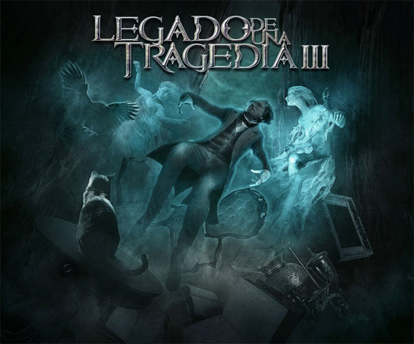

Legado de una Tragedia
La Bestia de Ojos Dentados
Legado de una Tragedia vol.3
El Mundo de los Sueños (8:09)
La Bestia de Ojos Dentados (06:07)
La Maldición del Manuscrito (07:09)
Corazones Marcados por la Traición (6:16)
El Resurgir de los Dioses Caídos (4:52)
El Pecado de la Eternidad (6:27)
Las Aventuras de Arthur Gordom Pym (1:02)
El Demonio de la Perversidad (6:08)
Epitafio del Destino (7:50)